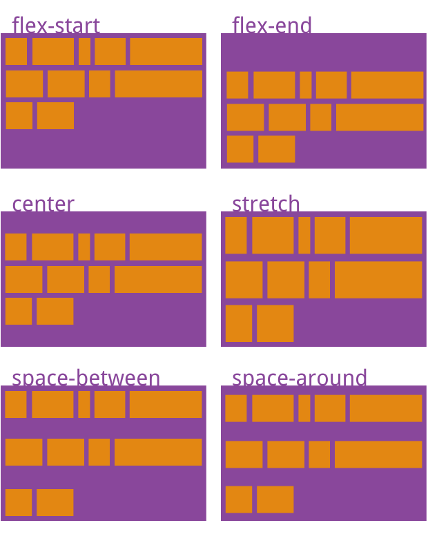

网页布局（layout）是CSS的一个重点应用。
布局的传统解决方案：基于盒状模型，依赖 display属性 + position属性 +float属性。针对于某些特殊布局就显得非常不方便，例如，垂直居中就不容易实现。
Flex布局：2009年，W3C提出一种新的方案，可以简便、完整、响应式地实现各种页面布局。
特点
1.任何元素都可以指定为flex布局
2.设置flex布局后，子元素float、clear和vertical-align属性将失效。
flex属性
- flex-direction
- flex-wrap
- flex-flow
- justify-content
- align-items
- align-content
flex-direction
决定flex布局排版方向，默认为横向排版
flex-direction: row | row-reverse | column | column-reverse;
- row：(默认值)横向排版，起点为左上角
- row-reverse：横向排版，起点为右上角
- column：竖向排版，起点为左上角
- column-reverse：竖向排版，起点为左下角
flex-wrap
决定flex超出主方向布局位置时是否换行，以及换行方式
flex: nowrap | wrap | wrap-reverse;
- nowrap：默认值，不换行
- wrap：换行，常规排版
- wrap-reverse：反向换行，从最下方往上方排版
flex-flow
该flex-flow 属性是 flex-direction 属性和 flex-wrap 属性的简写形式，默认值为row nowrap。
flex-flow: <flex-direction> <flex-wrap>
justify-content
决定flex布局在主轴方向上的排版方法
justify-content: flex-start | flex-end | center | space-around | space-between
- flex-start：默认值，沿主轴方向依次排列，无特殊样式(左对齐)
- flex-end：沿主轴方向反向依次排列，无特殊样式(右对齐)
- center：主轴方向居中排列，无特殊样式(居中)
- space-around：主轴方向依次排列，子元素与子元素见自动生成等宽间隔，子元素与子元素的间隔是子元素与父元素边框之间的间隔的两倍
- space-between：主轴方向依次排列，两端无间隔，子元素与子元素见自动生成等宽间隔
align-items
针对子元素在单一主轴上（一行上）交叉轴的排版方式
align-items: flex-start | flex-end | center | baseline | stretch

- flex-start, flex-end, center 规则和 justify-content 相同值的规则一样，将主轴替换为交叉轴即可
- baseline: 项目的第一行文字的基线对齐。
- stretch（默认值）：如果项目未设置高度或设为auto，将占满整个容器的高度。
align-content
规则和justify-content相同值的规则一样，将主轴替换为交叉轴即可，在单一主轴（项目只有一行）上该属性无效

flex子元素属性
- order
- flex-grow
- flex-shrink
- flex-basis
- flex
- align-self
作用于flex项目下的直接子元素
order（整型）
order属性定义项目的排列顺序。数值越小，排列越靠前，默认为0。
flex-grow（浮点型）
该flex-grow属性定义项目的放大比例，将剩余空间等比缩放大小，分配给当前指定项目
省略时默认值为 1； 初始值为 0(即如果存在剩余空间，也不放大)
负值对该属性无效。如果所有项目的
flex-grow属性都为1，则它们将等分剩余空间（如果有的话）。如果一个项目的flex-grow属性为2，其他项目都为1，则前者占据的剩余空间将比其他项多一倍。
flex-shrink（浮点型）
该flex-shrink属性定义了项目的缩小比例。
省略时默认值为 1；初始值为 1(即如果空间不足，该项目将缩小)
负值对该属性无效。如果所有项目的
flex-shrink属性都为1，当空间不足时，都将等比例缩小。如果一个项目的flex-shrink属性为0，其他项目都为1，则空间不足时，前者不缩小。
flex-basis
该flex-basis属性定义了在分配多余空间之前，项目占据的主轴空间（main size）。
默认值为auto，即项目的本来大小。
浏览器根据这个属性，计算主轴是否有多余空间。
若值为0，则必须加上单位，以免被视作伸缩性。省略时默认值为 0。(初始值为 auto)
它可以设为跟width或height属性一样的值（比如350px），则项目将占据固定空间。
flex
该flex属性是flex-grow属性和flex-shrink属性和flex-basis属性的简写方式
默认值为0 1 auto；该属性有两个快捷值：auto (1 1 auto) 和 none (0 0 auto)。
flex:1 === flex:1 1 0
flex: <flex-grow> <flex-shrink> <flex-basis>
单值语法: 值必须为以下其中之一:
- 一个无单位数(
<number>): 它会被当作flex:<number>1 0;<flex-shrink>的值被假定为1，然后<flex-basis>的值被假定为0。 - 一个有效的宽度(width)值: 它会被当作
<flex-basis>的值。 - 关键字none，auto或initial.
双值语法: 第一个值必须为一个无单位数，并且它会被当作 <flex-grow> 的值。第二个值必须为以下之一：
- 一个无单位数：它会被当作
<flex-shrink>的值。 - 一个有效的宽度值: 它会被当作
<flex-basis>的值。
三值语法:
- 第一个值必须为一个无单位数，并且它会被当作
<flex-grow>的值。 - 第二个值必须为一个无单位数，并且它会被当作
<flex-shrink>的值。 - 第三个值必须为一个有效的宽度值， 并且它会被当作
<flex-basis>的值。
align-self
该align-self属性允许单个项目有与其他项目不一样的对齐方式，可覆盖align-items属性。默认值为auto，表示继承父元素的align-items属性，如果没有父元素，则等同于stretch。
align-self: auto | flex-start | flex-end | center | baseline | stretch;